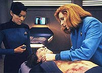
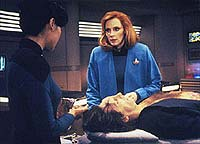
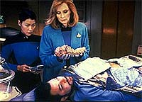
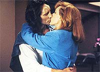

|
MANCHETE
DO EPISÓDIO
História
usa raça simbionte para propor
um dilema amoroso a Beverly Crusher
Episódio
anterior | Próximo
episódio
Sinopse:
Data Estelar: 44821.3.
A doutora Beverly Crusher se envolve romanticamente com um
embaixador Trill que está sendo levado pela Enterprise para mediar
uma disputa no sistema Peliar. Conforme a nave se aproxima de seu
destino, Riker é voluntário para conduzir uma nave auxiliar para
levar o embaixador, Odan, a Peliar, para encontrar os representantes
das luas Alfa e Beta, que estão prontas para entrar em guerra uma
com a outra.
 Logo
após a partida de Riker e Odan, uma nave se aproxima e ataca a nave
auxiliar, ferindo mortalmente o embaixador e obrigando Riker a
conduzir o veículo de volta à Enterprise. Durante o atendimento médico
de emergência, Beverly descobre que há um parasita em seu corpo.
Quando ela faz menção de removê-lo, choca-se ao descobrir que
Odan é o parasita, e aquele corpo um mero hospedeiro. O parasita, não
o corpo, deve ser salvo.
Enquanto Beverly luta para aceitar o fato de que o homem atraente
por quem ela se apaixonou é na verdade um pedaço inanimado de
tecido, a Enterprise contata os Trills para requisitar um novo
hospedeiro para Odan.
Infelizmente, a situação no sistema Peliar não pode esperar e
exige a atenção imediata do embaixador. Com isso em mente, Riker
se voluntaria para servir como um hospedeiro temporário para Odan,
de forma que ele possa completar sua missão.
Beverly consegue transferir o simbionte para o corpo de Riker com
sucesso, mas não consegue se acostumar a ver Odan como Riker, assim
como é incapaz de se relacionar com ele amorosamente, como antes.
Odan tristemente concorda em manter-se afastado se a presença dele
causa dor à doutora.
Logo após a transferência, o corpo de Riker começa a sofrer danos
severos, induzindo muita dor. Odan prossegue com a reunião de
qualquer modo e descobre que o desconforto de Beverly com a noção
de que ele ainda existe, dentro de Riker, é compartilhada pelos
representantes das luas de Peliar. Eles suspeitam que o estranho cenário
possa ser apenas uma farsa elaborada pela Frota Estelar para impor
seus próprios interesses na crise de Peliar.
Por sorte, Odan é capaz de convencer o representante de Beta a
aceitá-lo e continuar com as negociações, e o representante de
Alfa concorda em ter uma resposta dentro de oito horas. No fim do
dia, Beverly vai até os aposentos de Odan. Tomada pelo desejo, ela
supera as dificuldades de aceitar a dualidade Odan/Riker e se
entrega aos braços do amante.
 Na
manhã seguinte, enquanto se prepara para a mediação, Odan diz a
Beverly que a presença dele tornou-se uma ameaça ao corpo de Riker
e faz ela promoter que irá removê-lo logo após o encontro. A
disputa é resolvida rapidamente, e Odan volta para a enfermaria
para ser cirurgicamente removido do corpo de Riker.
A operação é um sucesso, mas a vida de Odan está em risco quando
a nave com o novo hospedeiro Trill se atrasa para o encontro. A
Enterprise dispara em dobra 9 para interceptar a nave e salvar o
embaixador. Quando a situação já está no limite, Worf avisa a
doutora que o novo hospedeiro já chegou --na verdade, uma
hospedeira.
Após transferir Odan para o corpo da mulher, ela explica que não
é capaz de se ajustar às constantes mudanças e incertezas
envolvidas neste relacionamento, decidindo por encerrá-lo. Odan
aceita sua decisão e, após uma troca de juras de amor, a agora
embaixadora retorna a Trill.
Comentários:
"The Host"
é um episódio que consegue ilustrar muito bem a diferença entre o
estilo das primeiras temporadas e o aprimoramento dos anos subseqüentes.
Fosse esta uma história do primeiro ano da série, com os mesmos
elementos, o enfoque ficaria todo sobre a disputa entre Alfa e Beta
(uma analogia clara com o problema contemporâneo do aquecimento
global, que é causado majoritariamente pelos EUA e ironicamente será
menos sentido por esse país) e toda uma ladainha se desenvolveria
em torno dessa disputa, criando um episódio totalmente previsível.
Mudando o enfoque para os personagens, temos uma bonita história em
torno da doutora Crusher, que usa o contexto do sistema Peliar
apenas para fazer o enredo avançar, trazendo novos desenvolvimentos
para o relacionamento entre Beverly e Odan.
É uma ocasião rara e digna de comemoração: as personagens
femininas de A Nova Geração não costumam ter episódios tão
bem escritos voltados para si --uma dificuldade crônica que
perseguiu os produtores por toda a série. Aqui, o enredo leva
Beverly a um nível novo, mostrando um pouco mais da recatada
doutora.
 A
discussão proposta não é trivial, chegando até perto do
homossexualismo (ponto que surge quando Odan é transferido para um
corpo feminino), embora o tema só esteja sub-entendido na cabeça
do espectador, mas não formalizado em nenhum diálogo (seguindo a
linha "politicamente correta" que sempre permeou a Nova
Geração).
Além disso, há potenciais "confrontos" na Enterprise,
quando Crusher conta a Troi seu dilema sobre Riker, e Picard
descobre que sua doutora favorita anda saindo com o embaixador Odan.
Nesses momentos é que podemos sentir o verdadeiro senso de amizade
e companheirismo entre os tripulantes da Enterprise --os barris de pólvora
são evitados de forma tão honesta e viva que chegamos realmente a
acreditar que o ser humano já está emocionalmente maduro no século
24.
Além do poder da própria história, outro elemento reforça sua
capacidade de envolver o espectador --a música. Normalmente
utilizada como mero pano de fundo para os episódios, a trilha
sonora aqui contraria essa regra, ao estabelecer o tom de muitas das
melhores cenas do segmento.
 Por
fim, vale uma nota sobre a primeira aparição dos Trills
--totalmente incoerente com o que depois aprenderíamos sobre essa
raça com Jadzia Dax em Deep Space Nine. As razões para as
discrepâncias são óbvias: enquanto aqui os Trills são apenas um
instrumento para criar o dilema na boa doutora, lá eles são um fim
em si mesmo.
Por essa razão, os Trills ganham aspectos muito mais interessantes
e coerentes a partir de Deep Space Nine (para não falar de
uma maquiagem mais atraente e menos alienígenas). É uma pena que
isso destrua um pouco da coerência e unidade dentro do universo
fictício de Jornada. Mas como dizem por aí, "é só
uma série de televisão"...
Citações:
Troi - "Beverly,
you are in love."
("Beverly, você está amando.")
Beverly - "Sometimes I wish you weren't so... emphatic."
("Algumas vezes eu gostaria que você não fosse tão... empática.")
Trivia:
 Este episódio apresenta os
Trills, uma raça de seres que vive em simbiose com outro ser
hospedeiro. Em Deep Space Nine, com a presença da Trill
Jadzia (depois Ezri) Dax, essa raça seria plenamente desenvolvida
para o público. A maquiagem dos Trills foi mudada em DS9,
passando de uma testa estranha para agradáveis pintas ao longo da
lateral do corpo.
Este episódio apresenta os
Trills, uma raça de seres que vive em simbiose com outro ser
hospedeiro. Em Deep Space Nine, com a presença da Trill
Jadzia (depois Ezri) Dax, essa raça seria plenamente desenvolvida
para o público. A maquiagem dos Trills foi mudada em DS9,
passando de uma testa estranha para agradáveis pintas ao longo da
lateral do corpo.
O
diretor deste episódio, Marvin V. Rush, é o diretor de fotografia
da série desde a terceira temporada. Ele trabalhou na Nova Geração
até o episódio 128, "Realm of
Fear", do sexto ano, sendo depois substituído por
Jonathan West. Segundo Marvin Rush, o maior problema que ele
encontrou para dirigir este episódio foi o de disfarçar a gravidez
de sete meses de Gates McFadden (Dra. Crusher). James Cleveland
McFadden-Talbot nasceu alguns meses depois, no dia 10/06/1991,
durante o período de intervalo entre as temporadas.
Ficha
técnica:
Escrito por Michel Horvat
Direção de Marvin V. Rush
Exibido em 13/05/1991
Produção: 097
Elenco:
Patrick Stewart como
Jean-Luc Picard
Jonathan Frakes como William Thomas Riker
Brent Spiner como Data
LeVar Burton como Geordi La Forge
Michael Dorn como Worf
Gates McFadden como Beverly Crusher
Marina Sirtis como Deanna Troi
Elenco convidado:
Barbara Tarbuck como
a governadora Leka Trion
Nicole Orth-Pallavicini como Kareel
Wiliam Newman como Kalin Trose
Patti Yasutake como a enfermeira Alyssa Ogawa
Franc Luz como Odan
Episódio
anterior | Próximo
episódio
|